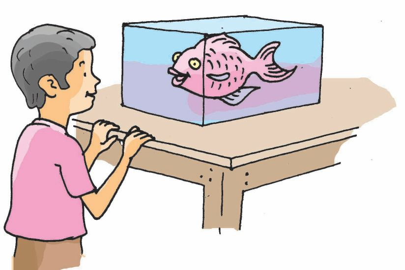
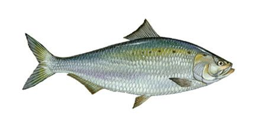
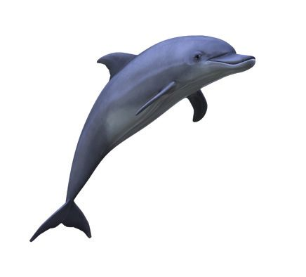
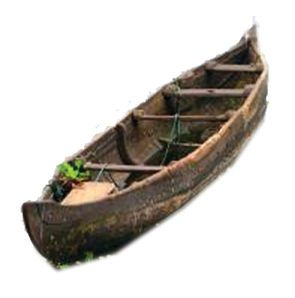
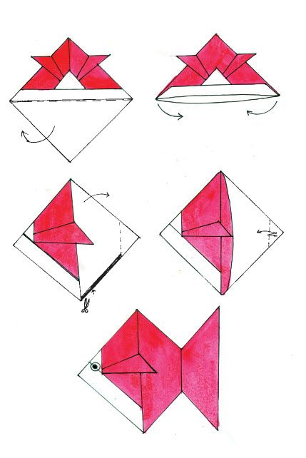
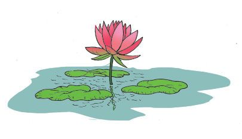
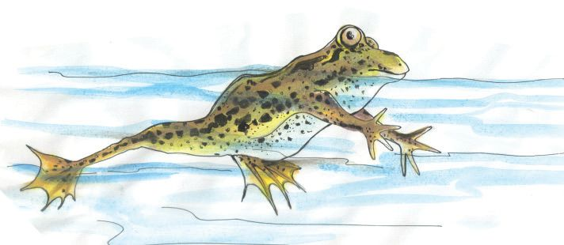
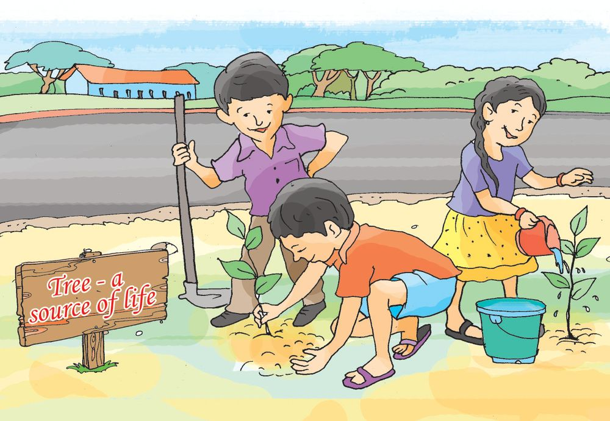

"Why don't you come down and play with me?" asked the fish looking up at the squirrel on the tree. On hearing this, the frog laughed and teased, "Ha! Ha! imagine the squirrel's condition if he gets into the water!"
Page 7

Page 8






The squirrel was not ready to give in. He hit back , "Can you climb a tree and jump along its branches like I do?" The frog said, "Who can dive and turn in water like the fish?" Can a fish live or move on land?
Have you observed a fish? Draw the picture of a fish. What are its special features? Examine the pictures given below carefully.
Notice the shape. Do they have a shape that helps them move swiftly in water?
Environmental Science
The boat - like shape with both ends pointed enables the fish to move through water. The fins also help the fish to swim in water.
An organism has certain peculiarities that help it to live in its dwelling place. This is called adaptation. What are the other adaptations of a fish? Discuss. 8
Page 9



Paper fish This is a model of a fish made of paper by Leena. Can you try making this yourself?
Look carefully at the patterns below and follow the method to make a fish using paper.
Observe a pond and a paddy field in your locality with the help of elders. What plants and animals did you notice there? List out their names. 9
Fields and Forests
KT 85 -2/EVS-4(E) Vol-1
Habitat
Page 10




Complete the table below with organisms that live on land and in water.
Living on land
Living in water
Banyan tree
Water lily
Mongoose
Frog
The water lily and lotus live in water. What adaptations help them to survive in water. Discuss and write them down in your environment diary.
They don't decay in water
On land and in water What are the adaptations that help a tortoise to move on land and in water?
slimy body
oar-like legs
Environmental Science
Can you add some more features? These adaptations help the tortoise to live on land and in water. Do frogs also have such adaptations? 10
Page 11


Which other creatures, do you know, have adaptations to live both on land and in water? List the creatures and their adaptations. Creatures
Duck
Crocodile
Adaptations
Who is smarter? "I am the one who provides shelter and home to most of the organisms" boasted the grand old Banyan tree. "Really? Why don't you look around carefully? Almost all organisms live in me. In fact, even you Granny Banyan, dwell in me" claimed the soil.
Name some organisms which live in the soil. Many organisms live on rocks too! Write their names down.
snake
grass
fresh air
11 11
Fields and Forests
Make a list of the uses of the banyan tree to organisms.
Page 12


There are several organisms living in and around ponds, trees and fields. These organisms need air, water, soil and sunlight to live. Plants and animals help each other to survive. Living and nonliving things depend on each other.
Living things are biotic factors and nonliving things are abiotic factors.
Can human beings live without air and water? How do biotic and abiotic factors depend on each other? Discuss.
Complete the table Biotic / Abiotic factors Fish
Interdependence
live in water
feed on small organisms in water
Water
provides dwelling place for organisms
Banyan tree
makes the soil fertile
helps retain water in the soil
Lotus
Rock
Air
Frog
Water Snake
Light
Tortoise
Soil
Vines
Environmental Science
Examine the table and record the general facts you have found out. We can see that living and nonliving things in an area depend on each other. An ecosystem includes the mutually dependent biotic and abiotic factors of a particular place. 12
Page 13


How beautiful is the forest! Why is it so beautiful? 13
Fields and Forests
Forest - a wealth
Page 14


So many diverse organisms like huge trees, tiny plants, animals, birds, insects and many others live in the forest. Butterflies and streams provide charm to the forest. The forest is indeed a world of wonder! How is the forest, which is rich with life, useful to us and other organisms? Discuss with your friends and prepare notes.
streams and rivers emerge from forests.
forest is the habitat of diverse living things.
It is very important to preserve the forest, an ecosystem with diversity, for sustaining life on earth. Have you noticed the different ecosystems in your locality? Make a list of those ecosystems.
hills
bush
sacred groves (kavukal)
Environmental Science
Study the picture carefully.
14
Page 15


Many activities of human beings harm the ecosystem. Discuss these activities and note them down in your environment diary.
excessive use of pesticides
Are these activities harmful to man, in turn? If so, how? Look at Sanimol and her friends. Discuss what they are doing. Will these activities help to protect our environment?
What other activities can we do in order to protect and preserve the environment?
We saw that both living and nonliving things depend on each other in an ecosystem. Human beings and other living things can survive only if the ecosystem is sustained. Let us engage in activities that protect our ecosystem. 15
Fields and Forests
Note them down in your environment diary.
Page 16


Significant learning outcomes The learner
classifies living things into those that live on land and those that live in water. identifies and explains how the adaptation of aquatic organisms are suitable for life in water. lists organisms that live on land and in water. finds out the interrelationship between organisms and states them. explains, with examples, that living and nonliving things are interdependent.
identifies the ecosystems in the locality.
identifies and explains the importance of forests.
identifies and states human interventions that destroy natural habitats. engages in activities that protect environment.
Let us assess 1.
Which of the following peculiarities differentiates the frog from the squirrel? a. b. c. d.
Environmental Science
2.
16
eating food movement living on land and in water breathing
Which one of the following organisms spends more time in water? a. b. c. d.
crocodile crane elephant wild boar
Page 17


3.
How does the shape of the body help a fish? a. to move in water b. to collect food c. to breathe d. to live in all climates
4.
Write whether the following statements are true or false: Statements
1
Living things do not depend on abiotic factors like soil, air etc.
2
The destruction of any of the factors of an ecosystem affects the ecosystem adversely.
3
The pollution of soil, water and air does not affect organisms.
4
Application of pesticides is good for the environment.
5
The levelling of fields and ponds and cutting down of trees help in the sustainable development of our country.
True/ false
Extended activities
KT 85 -3/EVS-4(E) Vol-1
Collect pictures of organisms living on land and in water, and write short notes about those organisms. Note down their adaptations. Make an album. Visit a nearby pond, paddy field, hill etc, and understand how they are important to the environment. Discuss how their destruction affects the environment. Set up an aquarium in class. 17
Fields and Forests
Page 18


Environmental Science
Look at the picture of the 'Eco Park' given above. Create an Eco Park in your school. Ensure aquatic organisms in the Eco Park. Also make sure that you plant the hibiscus, ixora, krishnakireedam, citrus plant, mussaenda etc., to attract butterflies.
18